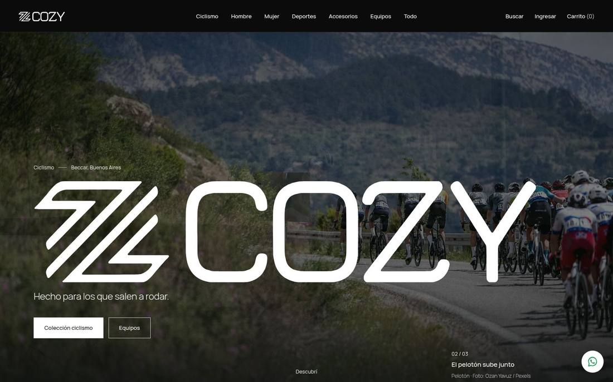
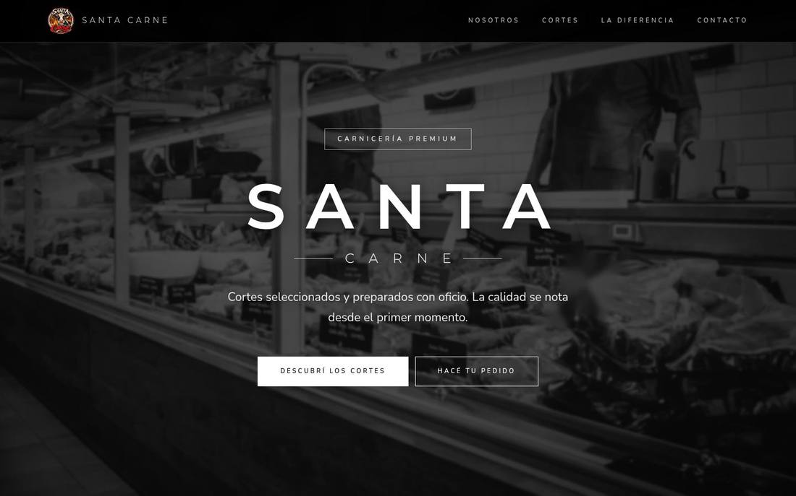
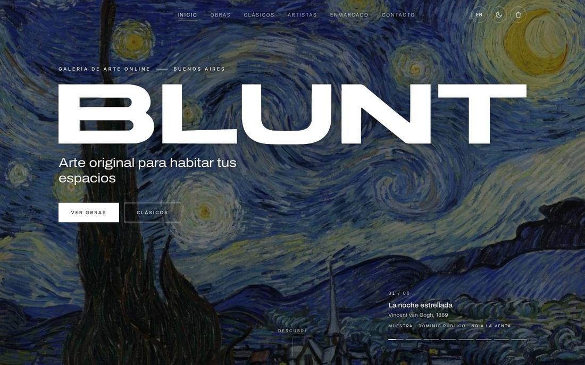
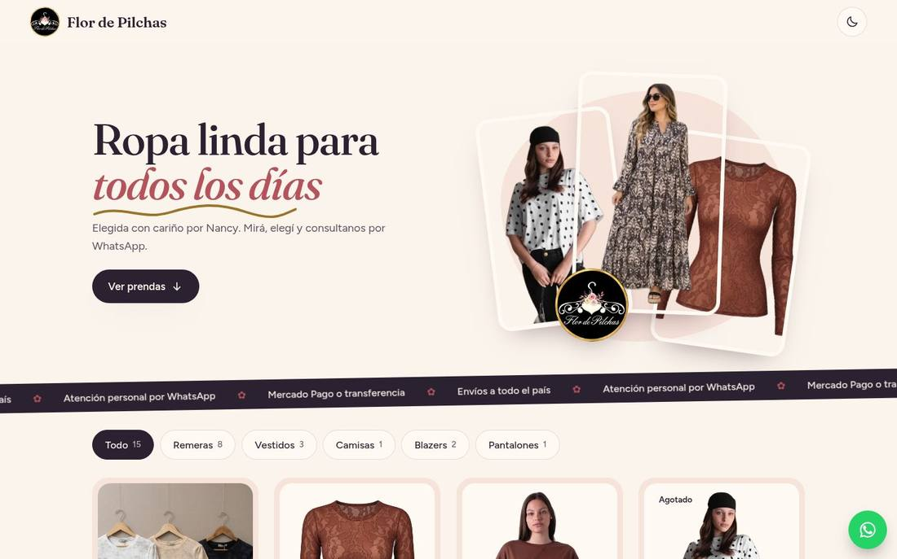
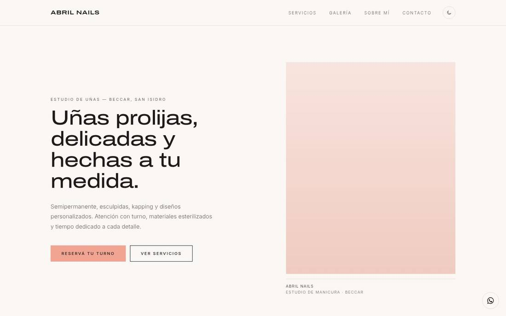

Tienda online
Cozy Sport
Indumentaria deportiva personalizada. Diseño de marca digital, catálogo y tienda online con TypeScript y Supabase.
Ver sitio ↗ Ver caso →Diseño & desarrollo web · Argentina 🇦🇷
Landing pages, tiendas online y portfolios: rápidos, prolijos y pensados para cada cliente.
Sitios reales, online y funcionando.

Indumentaria deportiva personalizada. Diseño de marca digital, catálogo y tienda online con TypeScript y Supabase.
Ver sitio ↗ Ver caso →
Carnicería de barrio. Sitio institucional con cortes, propuesta de valor y contacto directo.
Ver sitio ↗
Galería de arte online. Diseño editorial de alto impacto y catálogo de obras.
Ver sitio ↗
Ropa para todos los días. Catálogo por categorías y pedidos por WhatsApp.
Ver sitio ↗
Manicura y nail art en Buenos Aires. Landing minimalista con servicios, galería y reserva de turnos.
Ver sitio ↗10 propuestas visuales distintas para la misma marca: motion, editorial, mono, clásico, deportivo y más.
Ver todas ↗Una página clara y rápida para presentar tu negocio y convertir visitas en consultas.
Catálogo, carrito y pedidos (por web o WhatsApp) para vender todos los días.
Sitios para mostrar tu trabajo, tu marca o tu colección con estilo propio.
Entendemos tu negocio, tu público y qué necesitás.
Propuesta visual a medida, con ajustes hasta que te cierre.
Sitio rápido, responsive y optimizado para celulares.
Lo publicamos online y te acompaño después.
Contame tu idea y armamos algo lindo juntos.